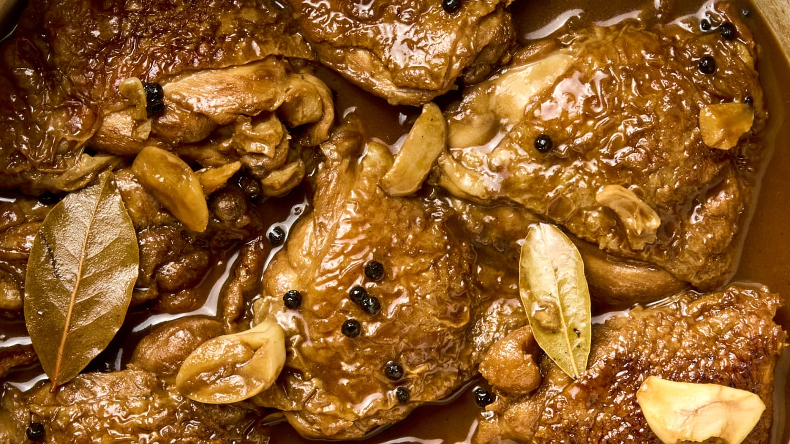

Chicken Adobo

Description
This chicken adobo recipe is simple to make and loved by all who try it! It has been modified to be a bit saucier than traditional adobo and is delicious served over rice.
Ingredients
- Vegetable oil
- Chicken
- Onion
- Minced garlic
- Soy sauce
- Vinegar
- Garlic powder
- Black pepper
- Bay leaf
Steps
- Heat vegetable oil in a large skillet over medium-high heat. Cook chicken pieces until golden brown, 2 to 3 minutes per side. Transfer chicken to a plate and set aside.
- Add onion and garlic to the skillet; cook until softened and brown, about 3 to 5 minutes.
- Pour in soy sauce and vinegar and season with garlic powder, black pepper, and bay leaf.
- Return chicken to pan, increase heat to high, and bring to a boil. Reduce heat to medium-low, cover, and simmer until chicken is tender and cooked through, 35 to 40 minutes.